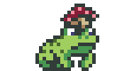
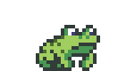

Ano: 2022
Estilo: Pixel Art
História: O jogo "Anuros" foi desenvolvido como projeto final do curso de Jogos Digitais. Sua história foi moldada a partir de pesquisas cientificas sobre as mudanças climáticas, sendo assim, o jogo busca conscientizar crianças e jovens de uma maneira lúdica e divertida.
 